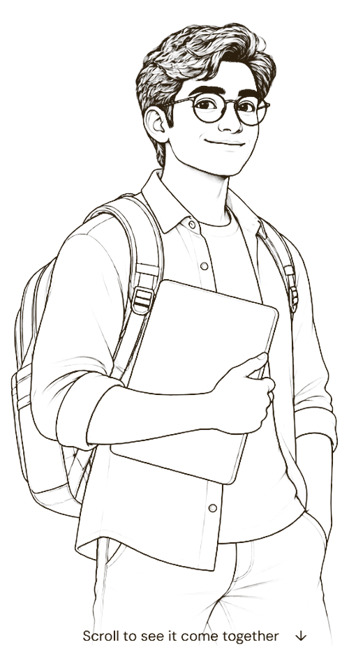

Master interviews with confidence. IMAIRA+ evaluates technical depth, answer structure, and communication — never native pronunciation.
Practise, get feedback and feel ready for your next step.
Turn every practice into a better next attempt.

We strip away acoustic variations and focus purely on your technical problem solving and system thinking.
Dialect and pronunciation variations are filtered out at the audio frequency level before any semantic analysis takes place.
Your spoken thoughts map directly into structured architecture diagrams and system trade-offs regardless of sentence wording.
Scores depend solely on technical soundness: boundary constraints, failure handling, and latency optimizations.
Consensus protocols, Raft/Paxos invariants, fault tolerance under network partitions, and strong replication guarantees.
LSM-Trees vs B-Trees, Write-Ahead Logging (WAL), MVCC concurrency control, and storage compaction trade-offs.
Tensor and pipeline parallelism, NCCL ring all-reduce communication collectives, and high-bandwidth interconnects.
Human interviewers often inadvertently dock non-native speakers on clarity despite pristine architectural reasoning. IMAIRA+ guarantees an unassailable benchmark: your score reflects pure engineering clarity, nothing else.
Join candidates and engineering organizations conducting impartial Staff and Principal architect assessments. Launch a sandbox session immediately.